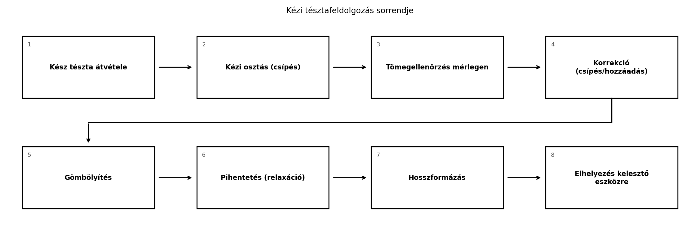

Egy hajnali pékségben a gépi osztó éppen karbantartás alatt áll, de a kenyeresrendelést el kell indítani. A pékség vezetője megkéri a tanulót: „most kézzel csípd ki a kenyereket, és formázd meg, mintha gépből jönnének.” Ha a kézi osztás, gömbölyítés és hosszformázás nem megy tömegpontosan, akkor a vevő később beméri a kenyeret, és az alacsonyabb tömeg miatt reklamál, vagy a túl nagy darabok miatt a pékség vesztesége nő. Ha a tészta felülete nem zárt, a kenyér oldala kireped, a bélzete egyenetlen lesz. Ezért a kézi feldolgozás nemcsak kézügyesség, hanem szakmai mérési és minőségügyi feladat.
Továbbvitt eredmény. Az itt megtanult kézi osztási, gömbölyítési és hosszformázási fogásokat használjuk a Sodrás, hurkolás, fonás és csavarás alfejezetben, és ezek nélkül a Búzakenyér és fehér kenyér előállítása alfejezetben sem lehet pontosan feladni a tésztát.
A kézi feldolgozás sorrendje általában a következő:

Ezt a láncot kell begyakorolni. Ahol a termék csak gömbölyítést kíván – például kerek zsemle, kerek kenyér –, ott a hosszformázás kimarad, de a pihentetés és a kelesztő eszközre helyezés akkor is része a folyamatnak.
Definíció. A kézi osztás (csípés) a tészta olyan darabolása, amikor a pék a tésztaköteget kézzel, éles tésztakéssel vagy tésztakártyával a kívánt feladási tömeghez közeli darabokra vágja, majd a darabokat mérlegen ellenőrzi és korrigálja.
Definíció. A gömbölyítés a feldarabolt tészta előformázása, amelynek során a darab felülete feszessé válik, a nagyobb gázbuborékok részben kinyomódnak, a gáz egyenletesebben oszlik el, és a tészta sima, zárt bőrt kap. A gömbölyített darab később könnyebben formázható, és kevésbé ragad.
Definíció. A hosszformázás a gömbölyített tészta további alakítása, amelyből a kenyér vagy péksütemény jellegének megfelelő, egyenletes henger, vekni vagy cipó alakul ki. A hosszformázás rendezheti a sikérhálót, és részben lezárja a felületet.
Összefüggés. A kézi osztás alapképlete a feladási tömegből és a tésztatömegből adja a darabszámot:
ahol a darabszám (db), a feldolgozandó tészta tömege (kg vagy g), az egy darabra előírt feladási tömeg (kg vagy g). A számításnál az egységeknek azonosnak kell lenniük.
Szabály. A kézi osztásnál a darabokat a csípés után azonnal mérjük és korrigáljuk, amíg a felületük friss és tapadóképes. A lemért darabot nem szabad sokáig puszta asztalon hagyni, mert bőrösödik, és a gömbölyítéshez már nem lesz elég tapadóképes.
Szabály. A korrekció során a kisebb darabhoz a másik darabból leszakított tésztát dörzsölünk, a nagyobb darabról pedig tésztakéssel vagy kézzel lecsípünk, és a levágott felesleget a következő darabokhoz dolgozzuk. A cél az, hogy minden darab a feladási tömeg tűréshatárán belül legyen.
Szabály. A gömbölyítés és a hosszformázás közötti pihentetést röviden, fedett, huzatmentes helyen végezzük. A pihentetés hossza a tészta típusától függ; kenyértészta esetén jellemzően 5–15 perc, péksütemény-tészta esetén 10–25 perc lehet (tanulási példa, ellenőrizendő: üzemi technológiai lap).
A dagasztott tészta a feldolgozóasztalra kerül, fedett vagy enyhén lisztezett felületre. A kenyértészta általában szilárdabb, a péksüteménytészta lágyabb, kenyértészta esetén a tészta nem lehet túl ragadós. Az asztal egy részét liszttel vagy étkezési olajjal nagyon vékonyan előkészítjük, hogy a tészta ne ragadjon, de a felesleges liszttől ne is száradjon.
Higiénia. A munkafelületnek tisztának, az eszközöknek élelmiszer-ipari, tisztítható állapotúnak kell lenniük. A kéz előzetes mosása, a munkaruha, hajháló és az ékszer nélküli munkavégzés kötelező. Sebes, gennyes kézzel tésztát feldolgozni tilos.
Allergén. A lisztezéshez használt liszt is allergén: gluténmentes termék formázásához gluténtartalmú lisztet lisztezésre sem használunk; ott a technológiai lap szerinti gluténmentes szóróanyag kell (más allergéntől mentes terméknél az adott allergént ne tartalmazza a szóróanyag). A közös kézi eszközök, mérleg és munkafelület a lisztporral, magvakkal vagy tejporral keresztszennyezhetnek, ezért a mentes termékeket külön, tisztított felületen, külön eszközökkel dolgozzuk fel.
Higiénia–technológia–minőség hármas. A felület lisztezése technológiai segédlet, de ha túl sok, a termék héja alatt lisztcsík jelenik meg, és a bélzet réteges lesz. Ha túl kevés, a tészta ragad, a formázásnál a felület szakad. A helyes mennyiség az, amikor a tészta éppen nem ragad, de a felülete nem lisztes.
A tésztaköteget éles tésztakéssel vagy tésztakártyával először nagyobb darabokra vágjuk, majd ezeket kézzel, csípéssel szakítjuk a kívánt méretre. A csípés lényege, hogy a tészta sikérhálója lehetőleg ne szakadjon szét durván, hanem a darabok sima, zárt vágási felülettel váljanak el. A kenyértészta osztásánál a csípést gyorsan, határozottan végezzük, különben a tészta nyúlik, és a tömeg nehezen becsülhető.
Szabály. A kézi osztásnál először a feladási tömegnél kissé, néhány százalékkal (pl. 2–5%-kal) nagyobb darabokat csípünk, mert a méréskor a felesleget könnyebb eltávolítani, mint a hiányzó tésztát pótolni. A becslés gyakorlattal egyre pontosabb; a ráhagyás termékenként és tésztaminőségtől függő tanulási példa (ellenőrizendő: az üzemi technológiai előírás).
Minden darabot mérlegre helyezünk, és a mért értéket összehasonlítjuk a feladási tömeggel. A darabot óvatosan mozgatjuk, ne nyomjuk szét. Ha a tömeg nagyobb, egy kis darabot lecsípünk; ha kisebb, egy kisebb tészta feleslegéből hozzádolgozunk. A korrekció után ismét mérünk, amíg a darab a tűréshatáron belül nem lesz.
Példa. Egy kenyér feladási tömege 800 g. Az első darab 826 g-ot nyom. Levágunk belőle 26 g-ot, és a mérlegen ellenőrizzük: 800 g. A levágott 26 g-ot a következő darabokhoz adhatjuk.
Példa. Ugyanannál a tételnél a második darab 792 g-ot nyom. A tűréshatár tanulási példa szerint ±1% (800 g-nál ±8 g), ezért a darab elfogadható, de ha az üzemi minőségügyi előírás vagy a technológiai lap szigorúbb, 800 g-ra kell korrigálni. (ellenőrizendő: a hatályos fogyasztói tömegtűrés és az üzemi szabályzat.)
Figyelem. A tömegpontosság a fogyasztói tájékoztatás és a mérésügyi (kiszerelési tűrés) szabályok miatt fontos. Az előírtól tartósan kisebb tömegű termék fogyasztóvédelmi és mérésügyi szabálytalanságot jelent (ellenőrizendő: hatályos mérésügyi jogszabály). A termék mért tömegét a gyártási naplóban rögzíteni kell.
A lemért darabot a munkafelületre helyezzük, és a tenyerünkkel vagy a két tenyerünkkel körkörös mozdulatokkal gömbölyítjük. A mozdulat lényege, hogy a tészta alja a felülethez súrlódjon, a teteje pedig a tenyerünk alatt feszüljön. A tészta fokozatosan sima, zárt bőrt kap.
Kényesebb, lágyabb tésztánál – például zsemle- vagy kalácstészta – a gömbölyítést óvatosabban, kisebb nyomással végezzük, hogy a tészta ne melegedjen túl, és a sikérháló ne szakadjon ki. Nagyobb kenyértésztánál a gömbölyítés határozottabb, de nem erőszakos.
Gyakorlat. Kis daraboknál (kb. 50–100 g) a gömbölyítés egy tenyérrel, körkörös mozdulattal történik; a tenyér „kalitkaként” borul a darabra (gyakorlott pék két kézzel egyszerre két darabot gömbölyít). Nagy daraboknál (kb. 500–1000 g) a tésztát először a két kezünk U-alakú fészkében kissé előfeszítjük, majd a munkafelületen gömbölyítjük. A gömbölyített darab sima felületét ne lisztezzük erősen; a lisztezett felület később nem tapad össze, és a sütésnél megjelenik az elválási vonal.
Az osztás és a gömbölyítés fogásait az alábbi hat kocka foglalja össze: 1 vágás tésztakártyával, 2 csípés két kézzel ráhagyással, 3 mérés és korrekció (a 826 g → 800 g példa), 4 kis darab gömbölyítése egy tenyérrel, 5 nagy darab előfeszítése U alakú fészekben, 6 a kész gömb metszete a feszes felső bőrrel és az alsó zárással. A vastag alsó vonal a munkafelülethez súrlódó talpat jelöli – ez a súrlódás feszíti meg a felső felületet.
A kézmozdulatot részletesen az Alakító műveletek és a pihentetés alfejezet gömbölyítési képsora mutatja (a helyes és a hibás gömbbel). A HTML-kiadásban a hat kocka lépésenként léptethető.
Szabály. A gömbölyített tésztát rögtön fedett helyen, tiszta konyharuhával vagy műanyag fóliával letakarva pihentetjük. A pihentetés alatt a tészta belső feszültsége részben oldódik, és a további hosszformázás repedés nélkül elvégezhető.
A hosszformázás célja, hogy a gömbölyített tésztából egyenletes, a termék formájának megfelelő hengert vagy veknit alakítsunk ki, és a felületet a lehető legjobban lezárjuk. A hosszformázás lépései általában:
Figyelem. A hosszformázást nem szabad túlerőltetni, mert a tészta visszahúzódik, és a sikérháló elszakad. Ha a tészta nem nyújtható, inkább pihentessük újra 5–10 percig, és csak azután folytassuk.
Szabály. A hosszformázott tészta felületén lévő lisztszemcséket a kelesztő eszközbe helyezés előtt, amennyire lehet, távolítsuk el, mert a lisztcsík a héj alatt fényes, kemény vonalat képez.
A megformázott tésztát a termék típusa szerint helyezzük kelesztő eszközre:
Az 5. szakasz öt lépését és a kétféle elhelyezést az alábbi ábra mutatja: az 1–4. kocka felülnézetben a lapítást, a felső és az alsó harmad behajtását és a sodrást, az 5. a henger keresztmetszetét a zárással alul; az (a) kocka a veknit a lemezen (zárás lefelé), a (b) a kerek kenyeret a szakajtóban (sima oldal lefelé, zárás felfelé), amely kiborításkor a sima oldalára fordul.
A leggyakoribb hiba, hogy a szakajtóba is a zárással lefelé teszik a tésztát: kiborítás után a zárás kerül felülre, és a kenyér a sütőben ott szétnyílik. Az Alakító műveletek és a pihentetés alfejezet képsora egy másik, szintén elterjedt hajtási változatot mutat (szélek behajtása, feltekerés). A HTML-kiadásban a lépések léptethetők, a végén a „lemez vagy szakajtó?” nézet a zárás helyzetét mutatja.
Higiénia. A szakajtó, kelesztőláda és lemez tisztaságát használat előtt ellenőrizzük. A szakajtó belisztezéséhez csak élelmiszer-minőségű lisztet vagy búzadarát használjunk, és a fel nem használt szakajtót ne hagyjuk nyitott poros helyen.
HACCP. A kézi osztásnál a HACCP-szempont az idegenanyag (tésztakártya-, körömdarab, ékszer), a kézhigiénia és az allergén-elkülönítés (a mentes termékek külön felületen, külön eszközökkel); ezeknek szerepelniük kell a HACCP-tervben. A tésztahőmérséklet és az állásidő minőségi paraméter, nem kritikus szabályozási pont: a túl meleg tészta ragad, a túl hosszú pihentetés bőrösödést és szabálytalan kelesztést okoz; ezeket a mérést és a vizuális ellenőrzést a műveleti naplóban rögzítjük (ellenőrizendő: az üzemi HACCP-terv és a hatósági útmutató).
Adott: 12,0 kg kenyértészta. A feladási tömeg 0,80 kg. Keresett: hány darabot kell kiosztani?
Képlet:
Ellenőrzés: , tehát a tésztatömeg visszaadódik. A gyakorlatban a mérési és csípési veszteség miatt kissé kevesebb lehet, ezért a feldolgozás közben folyamatosan mérünk. ∎
Adott: 60 db zsemle, a feladási tömeg egyenként 0,055 kg (55 g). Keresett: mennyi tésztát kell osztani, és mekkora a teljes tésztaigény?
Képlet:
Tehát legalább 3,30 kg tésztára van szükség, amelyhez a dagasztásnál technológiai veszteséggel számolva többet kell készíteni. A tömegméréskor a tűrés például ±1% (55 g-nál ±0,55 g, azaz 54,45–55,55 g; 0,1 g-os kijelzésű mérlegen 54,5–55,5 g még megfelelő) lehet tanulási példa; az aktuális tűrést az üzemi technológiai lap adja meg. ∎
Egy lemért kenyértészta tömege 0,812 kg. Az előírt feladási tömeg 0,800 kg. A darabról 12 g tésztát csípünk le, és a levágott darabot a következő adaghoz tesszük. A visszamérés: 0,800 kg. Ha a mérés közben hozzáfogtunk a tésztához, a mérleget nullázzuk, és a tálat tisztán tartjuk. ∎
Előírás. A fogyasztóknak szánt sütőipari termékeknél a tömegre vonatkozóan a fogyasztói tájékoztatás és a kereskedelemben alkalmazott tömegtűrés szabályait kell betartani (1169/2011/EU rendelet – a termék nettó tömegének jelölésére vonatkozó általános elvek; a kiskereskedelemben alkalmazott mérésügyi tűrések külön jogszabály szerint). (ellenőrizendő: a hatályos mérésügyi előírás és a termékjelölési szabályok, az MSZ vagy Magyar Élelmiszerkönyv szerinti sütőipari termékcsoportnorma tömegtűrése.) A gyakorlati munkában a mérési és csípési tűrés az üzemi technológiai lapon szerepel, és a hatósági ellenőrzés ezt jogszabályi követelményekkel hasonlíthatja össze. Ne találj ki pontos határértéket, mindig az aktuális előírást és az üzemi papírokat ellenőrizd.
Valós eset. Egy tanuló késő délutáni műszakban 30 darab büfékenyeret osztott kézzel. Az első tíz darabot ránézésre, mérés nélkül csípte, mert sietett. A gömbölyítés után a mérlegen ellenőrizte: a kenyerek tömege 710 és 870 g között szórt, a feladási tömeg 800 g volt. A hibás darabokat újra kellett dolgozni, a tésztákat gyúrni, és a maradék tésztát a következő adagokhoz adagolni. A tészta közben melegedett, bőrösödött, és néhány kenyérnek a héja később repedezett. A tanulság: a kézi osztásnál a mérés nem időveszteség, hanem a tömegpontosság és a minőség előfeltétele. A következő alkalommal minden darabot lemért, és a gyártási naplóba is beírt.
A tanuló kézzel tömegpontosan oszt, gömbölyít és hosszformáz egy adott tésztatételt, majd a tésztát a kelesztő eszközre helyezi, és a műveletet dokumentálja.
Higiénia. A munkavégzés előtt tiszta munkaruhát, hajhálót és cipővédőt használunk; a kézről az ékszereket levesszük. A kezet és az alkart meleg vízzel, élelmiszer-ipari kézmosó szerrel mossuk. A munkafelületet és az eszközöket ellenőrizzük, szükség szerint tisztítjuk, fertőtlenítjük. Gennyes, gyulladt seb vagy fertőző betegség esetén élelmiszerrel nem dolgozhatsz – jelentsd a műszakvezetőnek. Kisebb, tiszta sérülést vízhatlan, feltűnő (kék) kötéssel és egyszer használatos kesztyűvel fedj le; ha a kötés átázik vagy leesik, a munkát szakítsd meg, és cserélj kötést (ellenőrizendő: a pékség higiéniai szabályzata).
Gépbiztonság. A mérleg csak ép, száraz környezetben használható; sérült vezetékkel, törött kijelzővel nem. A tésztát a mérlegen lévő edénybe óvatosan helyezzük, ne ejtsük. A mérleget nem szabad vízzel leönteni, és a nedves kézzel való kezelés tilos. A tésztakést és tésztakártyát úgy használjuk, hogy a vágóél ne irányuljon a testünk felé.
Ellenőrzési pontok. A munka közben figyeljük a tészta felületét: ne legyen lisztcsík, repedés, bőrösödés. A mérleg visszamérése után a tömeggel elégedettek lehetünk, ha a tűrésen belül van. A gömbölyített darab sima, feszes, a hosszformázott henger egyenletes, a végei nem vastagok. A kelesztő eszközön a tészta zárt, nem nyílik szét.
Tipikus hibák a gyakorlatban. (a) Mérés nélküli osztás, nagy tömegszórás; (b) túlzott lisztezés, réteges héj; (c) túl hosszú pihentetés, bőrösödött tészta; (d) a hosszformázásnál a zárás felfelé kerül, így a kelesztésnél szétnyílik.
A kézi feldolgozás minőségi jellemzői:
A gyakori eltérés: a tömeg túl nagy vagy túl kicsi, a felület lisztes, a forma görbe, a zárás felnyílt. Ilyenkor a tésztadarabot visszagyúrjuk, rövid pihentetés után újra formázzuk, és a felületet enyhén lesimítjuk.
Hiba: A tanuló ránézésre oszt, és nem mér. Tünet: nagy tömegszórás, reklamáció, a kemencében eltérő kelesztési idő. Ok: nem használ mérleget, a feladási tömeg fogalmát nem ismeri. Megelőzés: minden darabot mérjünk, a tűrést ellenőrizzük.
Hiba: A tészta túl lisztezett. Tünet: a termék héja alatt fehér, lisztes vonal, a bélzet réteges. Ok: túl erős lisztezés, a liszttel való takarékoskodás helyett a felületet is belisztezik. Megelőzés: csak a felületet nagyon vékonyan lisztezzük, a felesleget ecsettel vagy kézzel eltávolítjuk.
Hiba: A hosszformázás után a zárás felfelé kerül. Tünet: a kelesztés alatt a tészta felnyílik, a sütésnél a héj szabálytalanul reped, a forma görbe. Ok: a tészta zárási vonalát nem figyeli. Megelőzés: a formázás után mindig ellenőrizzük, hogy a zárás alul van.
Hiba: A tészta visszahúzódik a hosszformázásnál. Tünet: a henger rövid, vastag, a felülete megfeszül. Ok: a gömbölyítés utáni pihentetés túl rövid. Megelőzés: tartsuk be az 5–15 perces relaxációs időt, és ha kell, újra pihentessünk.
1. feladat (A). Határozd meg a darabszámot, ha 9,0 kg tésztából 0,060 kg-os (60 g) feladási tömegű zsemléket osztasz. Ellenőrizd a műveletet!
2. feladat (A). Sorold fel a gömbölyítés három minőségi jelét, amit a művelet végén ellenőrzöl.
3. feladat (B). Egy kenyértészta tömege 0,845 kg. A feladási tömeg 0,800 kg. Hány grammot kell lecsípni, és hogyan ellenőrzöd a korrekciót? Mennyi lesz a veszteség a tételben, ha 10 ilyen túlságosan nagy darabról csípsz le, és a levágott tésztát nem használod fel?
4. feladat (B). Kétféle kenyértészta van: az egyikből 12 db 0,75 kg-os, a másikból 8 db 0,50 kg-os darabot kell formázni. Mennyi tésztát kell összesen biztosítani a feldolgozáshoz, ha 2% technológiai veszteséggel számolunk? (Kerekíts 0,1 kg pontossággal.)
5. feladat (C). A tanuló a hosszformázás után a vekniket a kelesztőlemezre teszi, de a zárásuk felfelé néz. A kelesztés végén néhány vekni szétnyílik, és a felületük repedezett. Magyarázd el, miért hiba ez, és mi a helyes elhelyezés. Hogyan lehet a hibás darabokat megmenteni?
6. feladat (D). A gyakorlati útmutató szerint 24 db zsemlét készítesz. A lemért darabok tömege: 56,2 g; 54,8 g; 55,1 g; 55,7 g; 54,9 g; 55,3 g; 55,0 g; 56,0 g; 54,6 g; 55,2 g; 55,4 g; 54,7 g; 55,5 g; 55,6 g; 55,0 g; 54,9 g; 55,1 g; 55,8 g; 54,5 g; 55,2 g; 55,3 g; 55,9 g; 55,1 g; 55,4 g. A tűrés ±1% az 55,0 g-os feladási tömeghez. Melyik darabok esnek kívül a tűrésen, és mit teszel velük? Írd be csoportosítva a naplóba.
Képlet: . Ellenőrzés: . Tehát 150 darab zsemle osztható.
A gömbölyített tészta sima, feszes felületű, zárt; nem ragad a munkafelülethez; a forma kerek, a tészta nem szakadt ki. A dokumentálásnál ezt vizuálisan ellenőrizzük.
A lecsípendő tömeg: . A korrekciót méréssel ellenőrizzük: a darabot visszamérjük, és ha 0,800 kg, elfogadjuk. Ha 10 darabról 45 g-ot csípünk le, és nem használjuk fel, a veszteség . A gyakorlatban ezt a tésztát a következő darabokhoz adagoljuk, vagy a technológiai lap szerint a veszteséget dokumentáljuk.
Első tészta: . Második tészta: . Összesen: . A 2% veszteséggel számolva a szükséges tésztamennyiség:
Kerekítve: 13,3 kg. Tehát ennyi tésztát kell biztosítani.
A hiba oka: a zárás felfelé került, így a kelesztés alatt a tészta a leggyengébb vonal mentén szétnyílik, a héj sérül. A helyes elhelyezés: a zárás alulra, a sima felület felülre kerüljön. A hibás darabokat a kelesztés kezdetén vissza lehet gyúrni, rövid pihentetés után újraformázni, és ezután a zárást alulra helyezni. Ha már megkelt, a szétnyílt darabot óvatosan visszaformáljuk, és a zárást lefelé csúsztatjuk; túlzott kelesztésnél azonban a belső gáztartás már sérülhet.
A tűrés: , azaz . Az alsó határ , a felső határ . A mért 24 darab közül a tűrésen kívül 6 darab esik, mind túl nagy: 55,6; 55,7; 55,8; 55,9; 56,0 és 56,2 g. Túl kicsi darab nincs, mert a legkisebb mért érték, az 54,5 g, még a 54,45 g-os alsó határ fölött van. A többi 18 darab (54,5–55,5 g) megfelel. A túl nagy darabokról lecsípünk, a darabot visszamérjük, és csak akkor fogadjuk el, ha a határon belül van.
Csoportosított naplóbejegyzés: összesen 24 db; megfelelő 18 db; túl nagy 6 db (korrigálva, visszamérve); túl kicsi 0 db. A mért és a korrigált értékeket a naplóban külön rögzítjük.
A kézi osztás, gömbölyítés és hosszformázás a tésztafeldolgozás kézügyességet és mérési pontosságot igénylő szakasza. A kézi osztás (csípés) lényege, hogy a tésztát a feladási tömeghez közeli darabokra vágjuk, majd minden darabot mérlegen ellenőrzünk, és a szükséges korrekciót elvégezzük. A gömbölyítés sima, feszes, zárt felületű előformát ad; a hosszformázás lapításból, hajtogatásból, hengerré sodrásból és a zárás alulra igazításából áll. A műveletek között rövid pihentetés (relaxáció) csökkenti a belső feszültséget, és elkerüli a visszahúzódást. A kelesztő eszközre helyezésnél a zárás lefelé, a sima felület felfelé kerül, szakajtóban kiborítható terméknél a sima felület lefelé. Minden darabot mérjünk, a tömegtűrést tartsuk, a felületet ne lisztezzük túl. A gyártási naplóban rögzítsük a terméket, a tételt, a feladási tömeget, a darabszámot, a hőmérsékletet, az időt, a kezelőt és az eltéréseket. A továbbvitt eredmény a kézi alakítási készlet, amelyet a Sodrás, hurkolás, fonás és csavarás és a Búzakenyér és fehér kenyér előállítása alfejezetek használnak fel.